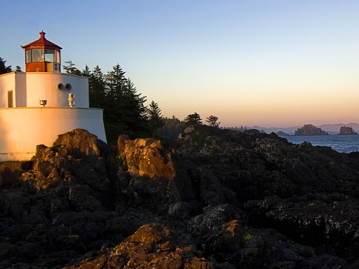
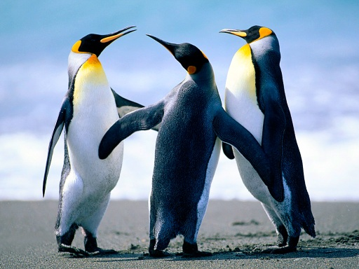
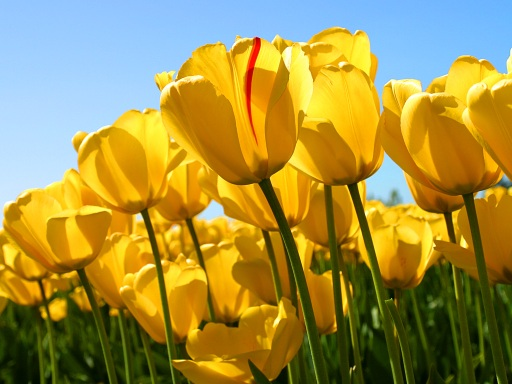

<juel-scroll-pane> shows its slotted children one at a time in a
horizontally-scrolling strip. By default it's driven purely by external controls — the
controls, next/previous, random, or
data-toggle attributes, each naming a CSS selector for an element elsewhere
on the page to listen on. Add swipe to also let visitors drag/swipe the pane
itself.
The swipe attribute lets visitors drag or swipe the pane itself to move between slides.

The controls attribute overlays previous/next arrows on the pane's edges.


previous/next point at any external element that should step the pane.
data-toggle on a slide names an element that jumps straight to it; clicking
that same element again returns to the master slide.
random points at an element that jumps to a random slide, avoiding repeats until every slide has been shown.
index sets (and reflects) the active slide — set it up front to choose the
starting slide, and listen for index-changed to react whenever it moves,
such as binding the current slide number elsewhere on the page.
Current slide index: 1
The pane resizes itself to match each slide's own dimensions as you move between them.